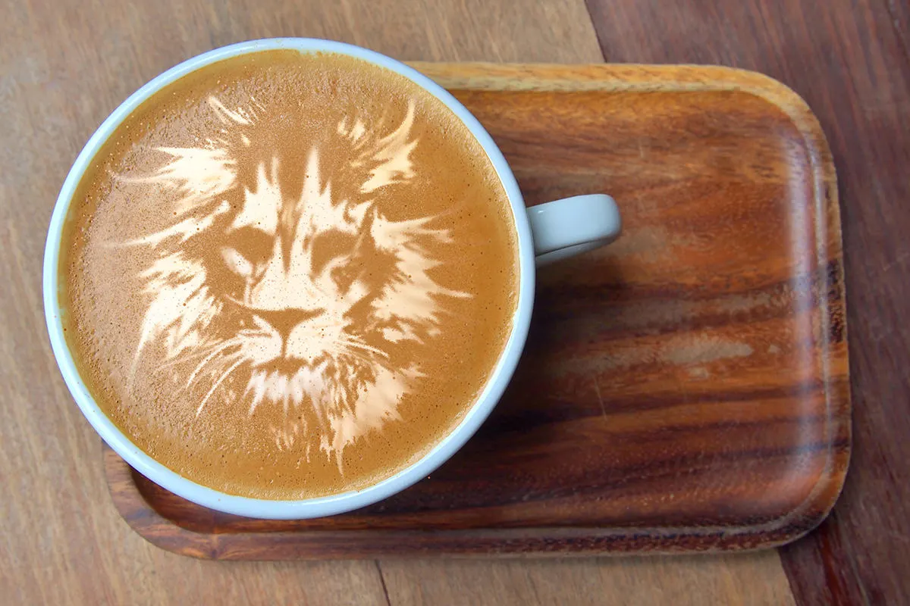
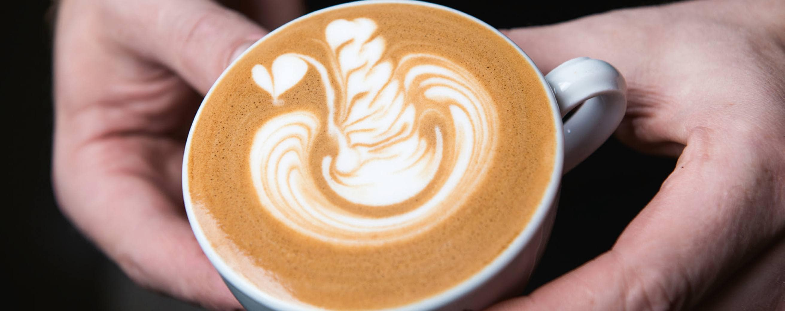
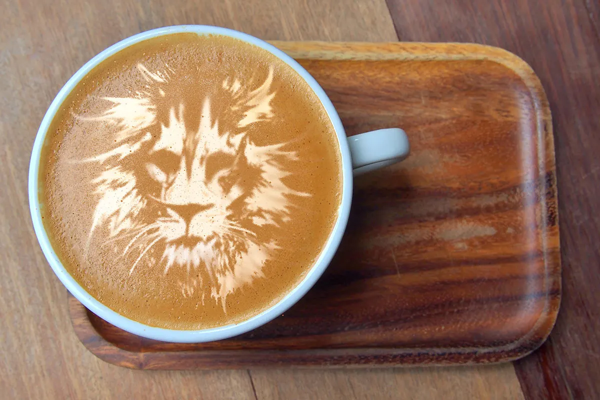
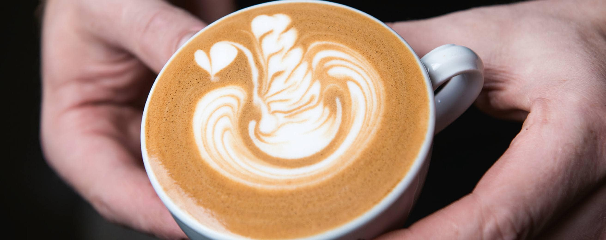

About Us
Welcome to Urban Coffee Co., the ultimate destination for coffee enthusiasts. We are a coffee blog dedicated to sharing our passion for all things coffee. Discover expertly curated articles, brewing techniques, and exciting recipes. Join our community and explore our relevant coffee courses, empowering you to master the art of brewing. Let's dive into the world of coffee together!


 


